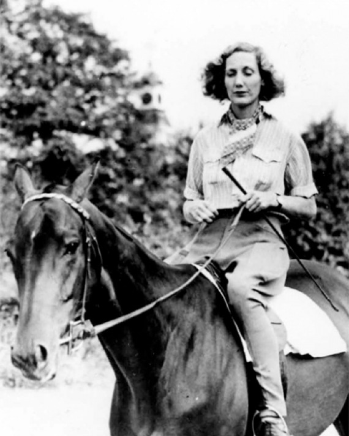
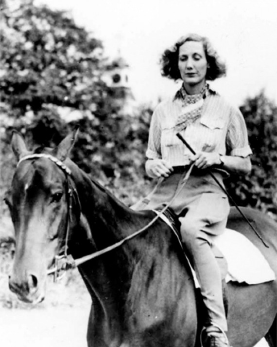

Beryl Markham
 


Beryl Markham collage.
Beryl Markham was an English-born Kenyan aviator, one of the first bush pilots. She was also a racehorse trainer, adventurer and author. Her book, West with the Night, details many of her adventures. She was also the first person to fly solo, non-stop across the Atlantic from Britain to North America.
At age four Markham went with her father to British East Africa, where she received a spotty education while hunting with African tribesmen and learning to speak Swahili and several African dialects. She remained in Kenya alone when her father’s fortune was lost and he left for Peru. At age 18 she became the first woman in Africa to receive a racehorse-trainer’s license. While in her late 20s, Markham learned to fly and became a commercial pilot, doing free-lance transporting of goods, people, and mail. She made a historic solo flight (1936) across the North Atlantic from England to Cape Breton Island, Canada.
In 1942 she wrote West with the Night (possibly with the help of others), and, her reputation having preceded her, she was invited to Hollywood. In addition to occasionally writing short stories, Markham trained six Kenya Derby winners. Though West with the Night had not been a great success when it was published, popular interest in colonial Africa and the complex relationships among the white settlers there—including Isak Dinesen, Bror Blixen, and Denys Finch Hatton—rekindled interest in the period during the late 20th century.
Learn more about this remarkable woman here!